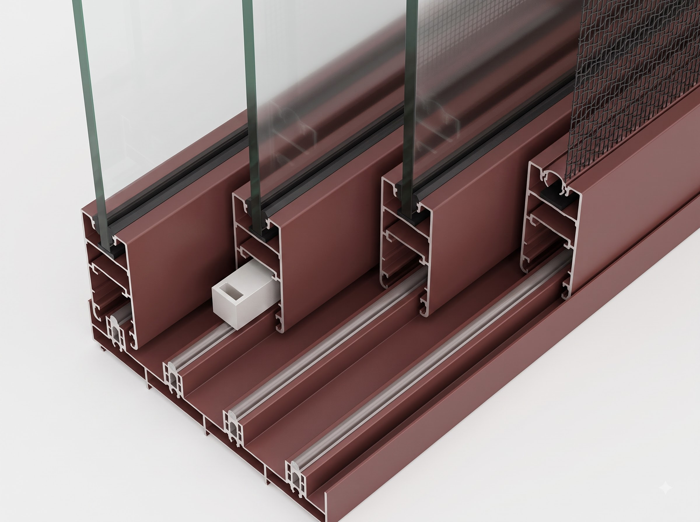

Ashlar System Windows Prismatic Refraction
Ashlar System Windows
Invisible Engineering
Crafting the world's most sophisticated Ashlar system windows with ultra-slim 14mm aluminum frames for luxury villas and modern commercial architecture.

Monolithic
Transparency.
Breaking the barrier between interior sanctuary and the raw exterior world.
EXPLORE TECHNICAL SPECS"The most sophisticated glass is that which vanishes. We design for the moment when the architect's vision meets the unobstructed light."
Our proprietary manufacturing process removes the standard green tint common in heavy glass, ensuring true-color transmission for interior spaces.
ARCHITECTURAL
STANDARDS
Ashlar system windows are rigorously tested to demanding environmental conditions, ensuring longevity and comfort through advanced layering.


Where Swiss Engineering Meets Unbounded Light.
Common Questions & Answers
Everything you need to know about Ashlar system windows, installation specifications, custom anodized finishes, and weather performance ratings.
READY FOR
SPECIFICATION
Contact our architectural engineering team for custom sizing and load calculations.